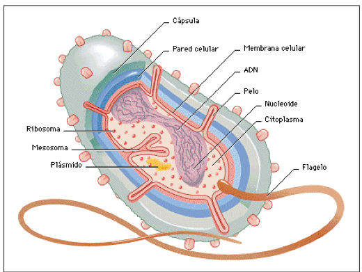

La célula es la mínima porción de materia viva, capaz de realizar metabolismo, crecer y reproducirse, por tanto, es la unidad morfológica, fisiológica y genética de todos los seres vivos unicelulares o pluricelulares. Esto se debe a que todos los seres vivos provienen de un ancestro común, el cual fue un ser unicelular, características: evidencian gran variedad de tamaños, formas y estructuras sin embargo todas presentan ciertas características en común; estado coloidal, tamaño generalmente microscópico, tienen siempre citoplasma con ribosomas, molecularmente llevan los dos ácidos nucleicos ADN y ARN, y producen ATP
Constitución física: Son sistemas constituidos por moléculas orgánicas e inorgánicas distribuidas en dos fases: dispersa y dispersante. Las macromoléculas como proteínas y agregados moleculares como los peptidoliposomas forman la fase dispersa, se encuentran hidratadas, unidas al agua ligada, separadas entre sí por el agua libre que forma la fase dispersante.
Tamaño microscópico: Tamaño menor a 100 micras, visible al microscopio. La célula más pequeña es el micoplasma, una bacteria de 0,2 micras de diámetro. La mayoría de células vegetales tienen un tamaño entre 15 y 40 micras.
Forma funcional: En los seres vivos pluricelulares la forma de sus células principales se debe a la función que a la célula cumple en el organismo, así por ejemplo las células musculares estriadas son cilíndricas debido a su función de elasticidad y contractibilidad, las neuronas tiene forma estrellada. La forma también se relaciona a la presión que ejercen las células vecinas, la presión oncótica y el cito esqueleto (armazón interno). Clasificación: Las células se clasifican según su organización estructural en: células procariotas y células eucariotas, la diferencia fundamental entre ambas es que las procariotas carecen de núcleo, mientras que las eucariotas tienen núcleo. Evolutivamente las procariotas son más antiguas.